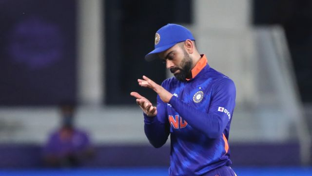
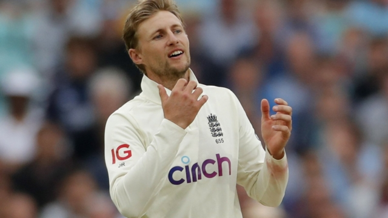
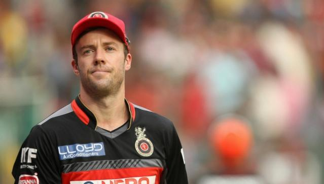

Virat replaced as Captain
Rohit Sharma replaces Virat Kohli as ODI captain, to take over as full-time limited-overs skipper of India
The Board of Control for Cricket in India (BCCI) on Wednesday announced that Rohit Sharma will take over from Virat Kohli as the captain of India's ODI team as well. Rohit was appointed as full-time T20I skipper after Kohli decided to step down from the role after India's T20 World Cup campaign. Rohit was also appointed as India's new Test vice-captain.
Will Leach or Bess play?
Root faces 'tricky decisions' around bowling combination on 'thatchy' Adelaide pitch - Ashes 2021
Joe Root has admitted that England are facing some "tricky decisions" over the make-up of their XI for the day-night Test in Adelaide, largely centred on the balance of the attack and the role spin might play. The three quicks on display in Brisbane - Chris Woakes, Mark Wood and Ollie Robinson - were impressive during much of the second day before tiring under the onslaught by Travis Head.
AB de Villiers retires
De Villiers announces his retirement from all forms of cricket after a stellar 17-year career scoring more than 20,000 runs.
Former South Africa international AB de Villiers says he has decided to retire from all forms of cricket, having lost his hunger for the game, ending a 17-year career where he established himself as one of his country’s greats. “It has been an incredible journey, but I have decided to retire from all cricket,” de Villiers said in a tweet.